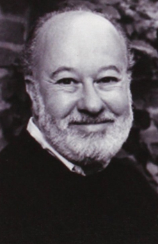

Alvin Schwartz was known for his books that were intended for young readers. He was interested in folklore for children. He enjoyed word play but is most well known for his "Scary Stories to Tell in the Dark" series. This series has been well questioned as it content has been debated on whether or not it is too scary for kids. Schwartz died of lymphoma in 1992.
